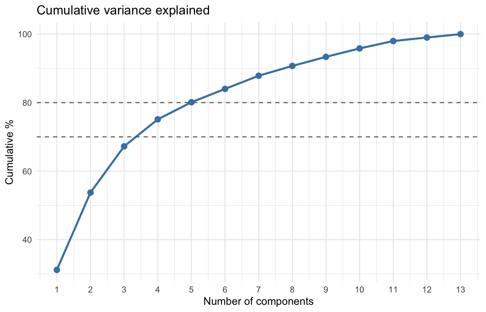
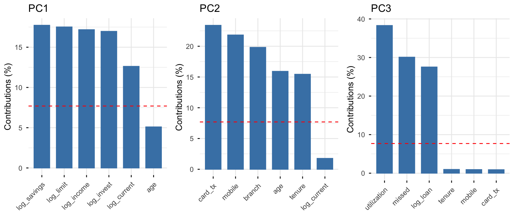
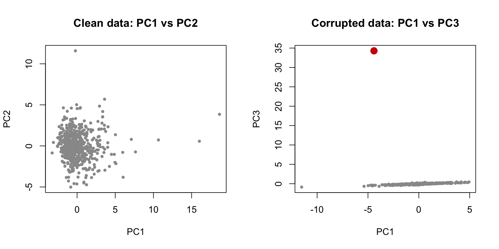

Principal Component Analysis (PCA) is a technique used to replace a set of correlated variables by a smaller set of new, uncorrelated variables — the principal components — that retain as much of the original variability as possible.
Where clustering looks for structure among the rows of a data set (which clients resemble each other?), PCA looks for structure among the columns (which variables carry the same information?). The two questions are complementary, and in practice PCA is very often the step that comes before clustering or classification.
PCA was introduced by Pearson (1901) as a problem of fitting lines and planes to a cloud of points, and developed in its modern statistical form by Hotelling (1933). A comprehensive treatment is given by Jolliffe (2002).
10.1 Why Reduce Dimension?
A retail bank stores dozens — often hundreds — of numeric attributes per client: balances across several account types, transaction counts by channel, credit exposure, tenure, product holdings, contact history. An insurer stores a similar volume per policy. Working with all of them at once creates four practical difficulties.
Redundancy
Many variables measure the same underlying thing. A client’s income, current-account balance, savings balance, investment holdings and credit limit are all partial views of a single unobserved quantity we might call affluence. Keeping five columns to describe one construct adds noise, not information.
Multicollinearity
Strongly correlated predictors destabilise regression models: coefficients become large, sign-flipped and highly sensitive to small changes in the sample. Because principal components are uncorrelated by construction, they offer one way out of this problem.
Visualisation
We can look at a scatterplot of two variables, and with effort at a matrix of pairwise plots for five or six. We cannot look at a thirteen-dimensional cloud. PCA gives us the best possible two-dimensional “photograph” of that cloud, in a precise sense defined below.
The cost of dimension
Distances, densities and neighbourhoods behave badly in high dimension — the phenomenon usually called the curse of dimensionality. Since \(k\)-means, \(k\)-medoids and \(k\)-nearest-neighbours all rest on distances, reducing dimension first often improves both their speed and their results.
Note
PCA does not select a subset of the original variables. It builds new variables, each one a weighted combination of all the originals. If your goal is to discard columns and keep the rest (for example, because measuring each variable is expensive), PCA is the wrong tool — you want variable selection instead.
10.1.1 Applications in Banking and Insurance
Client segmentation
Reducing a wide client table to two or three interpretable axes — affluence, digital engagement, credit strain — and then clustering on those axes rather than on the raw variables.
Credit and behavioural scoring
Compressing correlated bureau and transaction variables into orthogonal components before fitting a scorecard, so that coefficient estimates remain stable.
Yield-curve and market-risk modelling
The classic financial application: applied to daily changes in interest rates across maturities, PCA almost always returns three components interpretable as level, slope and curvature, which together explain over 95% of yield-curve movement. Risk systems hedge these three factors instead of every maturity separately.
Insurance portfolio analysis
Summarising policyholder and claims characteristics (exposure, frequency, severity, coverage limits, bonus-malus level) into a small number of risk dimensions for tariff analysis or reinsurance decisions.
Fraud and anomaly detection
An observation that is poorly reconstructed from the first few components — that is, one lying far from the low-dimensional subspace where ordinary clients live — is a natural candidate for investigation.
Questionnaire and survey analysis
Identifying the latent dimensions behind a battery of customer-satisfaction items, which are typically far more numerous than the concepts they measure.
10.2 The Data: A Retail Bank Client Portfolio
Throughout this chapter we work with a simulated portfolio of \(600\) retail bank clients. The data are generated rather than downloaded so that every result in this chapter is exactly reproducible in your browser, but the variables, their units and their correlation structure are typical of a real retail banking table.
Variable
Type
Description
Unit
client_id
id
Anonymised client identifier
—
age
numeric
Age of the client
years
tenure
numeric
Time as a client of the bank
years
income
numeric
Declared annual net income
€
balance_current
numeric
Average balance, current account
€
balance_savings
numeric
Average balance, savings products
€
investments
numeric
Value of investment holdings
€
credit_limit
numeric
Total credit-card limit granted
€
utilization
numeric
Share of the credit limit in use
%
loan_balance
numeric
Outstanding loan and mortgage debt
€
card_tx
numeric
Card transactions per month
count
mobile_logins
numeric
Mobile-app logins per month
count
branch_visits
numeric
Branch visits per year
count
missed_payments
numeric
Missed payments in the last 24 months
count
segment
factor
Commercial segment: Mass / Affluent / Private
—
region
factor
Region of residence
—
churn
factor
Client closed the relationship in the last year
—
The code below creates the data set. Run it once: every interactive box in this chapter uses the object bank that it leaves behind.
Before any multivariate method, look at the marginal distributions. This is exactly the exploratory work of the EDA chapter, and it determines the choices we make next.
income balance_savings investments utilization
Min. : 4500 Min. : 180 Min. : 40 Min. : 0.00
1st Qu.: 18000 1st Qu.: 4368 1st Qu.: 1478 1st Qu.:19.10
Median : 24950 Median : 10685 Median : 4930 Median :33.60
Mean : 30208 Mean : 22762 Mean : 17393 Mean :34.41
3rd Qu.: 37950 3rd Qu.: 24255 3rd Qu.: 13492 3rd Qu.:47.20
Max. :144500 Max. :1209700 Max. :577330 Max. :99.00
mobile_logins missed_payments
Min. : 1.00 Min. : 0.0000
1st Qu.: 10.00 1st Qu.: 0.0000
Median : 16.00 Median : 0.0000
Mean : 18.75 Mean : 0.8717
3rd Qu.: 24.00 3rd Qu.: 1.0000
Max. :184.00 Max. :12.0000
10.2.1 Skewness and the Log Transform
The monetary variables are strongly right-skewed, as monetary variables almost always are: most clients hold modest amounts and a small number hold very large ones.
The savings balance has a skewness of \(15.1\) and investments of \(7.3\). PCA is a variance-based method, and variance is not robust: a handful of private-banking clients with balances two orders of magnitude above the median would, on the raw scale, define the first component almost by themselves. Taking logarithms of the monetary variables brings their skewness essentially to zero:
The same matrix is built in your browser session by the helper below. Every interactive box from here on begins with X <- make_X(), so you can run them in any order.
Tip
Log transformation of monetary variables before PCA is standard practice in banking and insurance analytics. It has three effects: it removes the dominance of a few very large clients, it turns multiplicative relationships (a client with twice the income tends to hold twice the savings) into additive ones, which is what linear methods can capture, and it makes the resulting components easier to read as differences in order of magnitude rather than in euros.
Beware of zeros: \(\log(0)\) is undefined. Common remedies are \(\log(x+1)\), or treating “holds no investments” as a separate binary variable.
The count variables card_tx, mobile and branch keep some skewness, which is normal for counts and not damaging at this level. We leave them untransformed so that their scale stays interpretable.
10.2.2 The Correlation Matrix
PCA is, in the end, a way of reading a correlation matrix. It is worth looking at that matrix directly first.
Correlation matrix of the transformed bank variables. Blocks of mutually correlated variables are exactly what PCA will summarise.
Three blocks stand out:
the monetary variables (log_income, log_savings, log_invest, log_limit, log_current) move together;
the channel variables (card_tx, mobile) move together and both move againstbranch, age and tenure;
utilization, log_loan and missed form a third, smaller block.
If the correlation matrix were the identity — all variables mutually uncorrelated — PCA would have nothing to do: every component would explain exactly \(1/p\) of the variance and no reduction would be possible. PCA is useful precisely to the extent that the variables are correlated.
10.3 Notation, Centering and Scaling
Let \(\mathbf{X}\) be an \(n \times p\) data matrix: \(n\) clients in rows, \(p\) variables in columns. Write \(\mathbf{x}_i = (x_{i1}, \ldots, x_{ip})^{\top}\) for the record of client \(i\), and \(\bar{x}_j\) and \(s_j\) for the sample mean and standard deviation of variable \(j\).
10.3.1 Centering
PCA always begins by centering each variable: \[
\tilde{x}_{ij} = x_{ij} - \bar{x}_j .
\] Centering moves the origin of the coordinate system to the centre of gravity of the cloud of points. It is not optional: the components are directions through the mean, and without centering the first component would mostly point from the origin towards the mean of the data, which tells us nothing about its shape.
10.3.2 Scaling
Scaling is optional, and it is the single most consequential decision in a PCA. If we also divide by the standard deviation, \[
z_{ij} = \frac{x_{ij} - \bar{x}_j}{s_j},
\] then every variable has variance \(1\), and PCA is performed on the correlation matrix. If we do not, PCA is performed on the covariance matrix, and variables with large numerical variance dominate.
The variance of balance_savings is of the order of \(3.3 \times 10^{9}\) (euros squared); the variance of missed_payments is about \(2\) (counts squared). These numbers are not comparable — they are not even in the same units. A PCA on the covariance matrix of these columns is a PCA of the savings balance and nothing else:
The first component absorbs \(66.7\%\) of the variance and loads almost entirely on balance_savings and investments. Age, utilisation and every count variable have loadings indistinguishable from zero — not because they carry no information, but because they are measured in small numbers.
Warning
When variables are measured in different units, always use the correlation matrix (scale. = TRUE in prcomp, or cor = TRUE in princomp). Otherwise the analysis reflects your choice of units rather than the structure of the data: converting income from euros to thousands of euros would change the result completely.
The covariance matrix is appropriate only when all variables share the same unit and their differences in variability are themselves meaningful — for example, daily returns of a set of equities, or changes in yields across maturities.
From here on, every PCA is on the correlation matrix of the transformed matrix X.
10.4 The Algebra of PCA
10.4.1 The First Principal Component
Let \(\mathbf{Z}\) be the centred and scaled data matrix, and consider a direction in variable space given by a unit vector \(\mathbf{a} = (a_1, \ldots, a_p)^{\top}\), with \(\mathbf{a}^{\top}\mathbf{a} = 1\). Projecting the data onto this direction produces a new variable \[
y_i = \mathbf{a}^{\top}\mathbf{z}_i = a_1 z_{i1} + a_2 z_{i2} + \cdots + a_p z_{ip},
\qquad i = 1, \ldots, n ,
\] a linear combination of the original variables. Its sample variance is \[
\operatorname{Var}(y) = \mathbf{a}^{\top}\mathbf{S}\,\mathbf{a},
\] where \(\mathbf{S}\) is the sample covariance matrix of \(\mathbf{Z}\) — which, because the variables are standardised, is the correlation matrix\(\mathbf{R}\) of the original variables.
The first principal component is the direction that makes this variance as large as possible: \[
\mathbf{a}_1 = \arg\max_{\mathbf{a}^{\top}\mathbf{a} = 1} \; \mathbf{a}^{\top}\mathbf{S}\,\mathbf{a}.
\]
The constraint \(\mathbf{a}^{\top}\mathbf{a} = 1\) is essential: without it the variance could be made arbitrarily large simply by multiplying \(\mathbf{a}\) by a large constant, which changes the scale of the new variable but not the direction it points in.
Introducing a Lagrange multiplier \(\lambda\), we maximise \[
\mathbf{a}^{\top}\mathbf{S}\mathbf{a} - \lambda(\mathbf{a}^{\top}\mathbf{a} - 1),
\] and setting the derivative with respect to \(\mathbf{a}\) to zero gives \[
2\mathbf{S}\mathbf{a} - 2\lambda \mathbf{a} = \mathbf{0}
\qquad \Longleftrightarrow \qquad
\mathbf{S}\mathbf{a} = \lambda \mathbf{a}.
\]
This is the eigenvalue equation. The optimal direction \(\mathbf{a}\) must be an eigenvector of \(\mathbf{S}\), and its associated \(\lambda\) is an eigenvalue. Moreover, pre-multiplying by \(\mathbf{a}^{\top}\), \[
\mathbf{a}^{\top}\mathbf{S}\mathbf{a} = \lambda\, \mathbf{a}^{\top}\mathbf{a} = \lambda ,
\] so the variance captured by a component is its eigenvalue. To maximise variance we take the eigenvector belonging to the largest eigenvalue.
Note
Two readings of the same result:
Maximum variance: the first component is the direction along which the clients are most spread out.
Best fit: the first component is also the line that minimises the sum of squared perpendicular distances from the points to the line. This is the geometry of Pearson (1901), and it is not the same as the line fitted by ordinary least squares, which minimises vertical distances to a designated response variable.
Both descriptions define the same direction, which is why PCA can be presented either as variance maximisation or as low-dimensional approximation.
10.4.2 Subsequent Components
The second component solves the same problem with one extra requirement: it must be uncorrelated with the first. Since \[
\operatorname{Cov}(\mathbf{a}_1^{\top}\mathbf{z},\; \mathbf{a}_2^{\top}\mathbf{z}) = \mathbf{a}_1^{\top}\mathbf{S}\mathbf{a}_2 = \lambda_1 \mathbf{a}_1^{\top}\mathbf{a}_2,
\] requiring zero correlation is equivalent to requiring \(\mathbf{a}_1^{\top}\mathbf{a}_2 = 0\): the directions are orthogonal. Continuing in this way, the \(k\)-th component is the direction of maximum remaining variance among those orthogonal to the first \(k-1\).
Because \(\mathbf{S}\) is symmetric and positive semi-definite, it admits the spectral decomposition\[
\mathbf{S} = \mathbf{A}\,\boldsymbol{\Lambda}\,\mathbf{A}^{\top},
\qquad
\mathbf{A} = [\mathbf{a}_1, \ldots, \mathbf{a}_p],
\qquad
\boldsymbol{\Lambda} = \operatorname{diag}(\lambda_1, \ldots, \lambda_p),
\] with \(\lambda_1 \ge \lambda_2 \ge \cdots \ge \lambda_p \ge 0\) and \(\mathbf{A}^{\top}\mathbf{A} = \mathbf{I}\). The columns of \(\mathbf{A}\) are the \(p\) principal directions, sorted by the variance they explain, and they form an orthonormal basis: PCA is a rotation of the coordinate system, nothing more, until we decide to discard some of the new axes.
10.4.3 Total Variance is Preserved
Because the trace of a matrix is invariant under this rotation, \[
\sum_{k=1}^{p} \lambda_k = \operatorname{tr}(\mathbf{S}) = \sum_{j=1}^{p} s_{jj}.
\] On the correlation matrix every \(s_{jj} = 1\), so \[
\sum_{k=1}^{p} \lambda_k = p .
\]
With \(p = 13\) variables, the eigenvalues of our correlation matrix must sum to \(13\). This gives an immediate benchmark: a component with \(\lambda_k = 1\) explains exactly as much variance as one original standardised variable. This is the basis of the Kaiser criterion in Section 10.6.
The proportion of variance explained by component \(k\) is therefore \[
\text{PVE}_k = \frac{\lambda_k}{\sum_{m=1}^{p}\lambda_m} = \frac{\lambda_k}{p}
\quad \text{(correlation matrix)} .
\]
10.4.4 Connection with the Singular Value Decomposition
In practice, software does not form \(\mathbf{S}\) and diagonalise it; it applies the singular value decomposition to \(\mathbf{Z}\) directly: \[
\mathbf{Z} = \mathbf{U}\,\mathbf{D}\,\mathbf{V}^{\top},
\] with \(\mathbf{U}^{\top}\mathbf{U} = \mathbf{V}^{\top}\mathbf{V} = \mathbf{I}\) and \(\mathbf{D}\) diagonal with non-negative entries \(d_1 \ge \cdots \ge d_p\). Then \[
\mathbf{S} = \frac{1}{n-1}\mathbf{Z}^{\top}\mathbf{Z}
= \frac{1}{n-1}\mathbf{V}\mathbf{D}^{2}\mathbf{V}^{\top},
\] so \(\mathbf{V} = \mathbf{A}\) (the loadings) and \(\lambda_k = d_k^2/(n-1)\). The SVD route is numerically more stable, because squaring the data to form \(\mathbf{S}\) squares the condition number as well. This is why prcomp() (SVD-based) is preferred in R over the older princomp() (eigen-based).
Note
prcomp() divides by \(n-1\); princomp() divides by \(n\). The eigenvectors are identical, the eigenvalues differ by the factor \(n/(n-1)\), and for \(n = 600\) the difference is immaterial. Use prcomp().
10.4.5 Doing It by Hand
Everything above can be verified in a few lines. First the eigen-decomposition of the correlation matrix:
R_mat <-cor(X)e <-eigen(R_mat)round(e$values, 3) # the p eigenvalues
max(abs(abs(e$vectors[, 1]) -abs(pca$rotation[, 1]))) # first direction agrees
[1] 3.885781e-16
Both differences are of the order of \(10^{-14}\) — machine precision. And through the SVD:
Z <-scale(X) # centred and scaleds <-svd(Z)max(abs(s$d /sqrt(nrow(X) -1) - pca$sdev))
[1] 0
Identical again.
Warning
Signs are arbitrary. If \(\mathbf{a}\) is an eigenvector, so is \(-\mathbf{a}\), with the same eigenvalue. Different software — and different versions of the same software — may return a component with all its signs flipped. This changes nothing about the analysis, but it does reverse the verbal interpretation (“high on PC3” becomes “low on PC3”), so always state the direction explicitly when reporting results. This is why the comparison above uses abs().
10.5 Scores, Loadings and Explained Variance
Three objects come out of a PCA, and confusing them is the most common source of error in reading PCA output.
Object
Dimension
Meaning
In prcomp()
Loadings
\(p \times p\)
Weight of each variable in each component
$rotation
Scores
\(n \times p\)
Coordinate of each observation on each component
$x
Eigenvalues
\(p\)
Variance carried by each component
$sdev^2
10.5.1 Loadings
The loading \(a_{jk}\) is the weight of variable \(j\) in component \(k\). The vector \(\mathbf{a}_k\) has unit length, so the loadings of a component satisfy \(\sum_j a_{jk}^2 = 1\); a variable’s contribution to that component is therefore \(100\,a_{jk}^2\) per cent.
10.5.2 Scores
The score of client \(i\) on component \(k\) is \[
y_{ik} = \mathbf{a}_k^{\top}\mathbf{z}_i = \sum_{j=1}^{p} a_{jk}\, z_{ij}.
\] Scores are the new data: a client who was described by \(13\) numbers is now described by \(13\) new numbers, of which we intend to keep only the first few. By construction the scores have mean zero, variance \(\lambda_k\), and zero correlation with each other.
The eigenvalues are \(4.05\), \(2.93\), \(1.76\) and \(1.03\), explaining \(31.2\%\), \(22.6\%\), \(13.5\%\) and \(7.9\%\) of the total variance. The first three components together account for \(67.2\%\) of the variability of the thirteen original variables; adding the fourth brings this to \(75.1\%\).
Note
It is normal — and healthy — for social and behavioural data not to be compressible into two components. A first component explaining \(90\%\) of the variance usually means either that the variables are near-duplicates of one another, or that a scaling problem has gone unnoticed.
10.5.4 Reconstruction
Keeping only \(k\) components and rotating back gives an approximation to the standardised data: \[
\hat{\mathbf{Z}}_{(k)} = \mathbf{Y}_{(k)}\,\mathbf{A}_{(k)}^{\top},
\] where \(\mathbf{Y}_{(k)}\) holds the first \(k\) score columns and \(\mathbf{A}_{(k)}\) the first \(k\) loading columns. The Eckart–Young theorem (Eckart and Young 1936) states that this is the best possible rank-\(k\) approximation of \(\mathbf{Z}\) in the least-squares sense: no other set of \(k\) linear combinations reconstructs the data with smaller squared error.
Z <-scale(X)for (k inc(1, 2, 3, 4, 6, 8)) { Zhat <- pca$x[, 1:k, drop =FALSE] %*%t(pca$rotation[, 1:k, drop =FALSE])cat(sprintf("k = %d mean squared error = %.3f variance retained = %.1f%%\n", k, mean((Z - Zhat)^2), 100*sum(pca$sdev[1:k]^2) /ncol(X)))}
k = 1 mean squared error = 0.687 variance retained = 31.2%
k = 2 mean squared error = 0.462 variance retained = 53.7%
k = 3 mean squared error = 0.327 variance retained = 67.2%
k = 4 mean squared error = 0.248 variance retained = 75.1%
k = 6 mean squared error = 0.160 variance retained = 84.0%
k = 8 mean squared error = 0.093 variance retained = 90.7%
The error and the retained variance are two views of the same quantity: retaining \(67.2\%\) of the variance with three components means leaving \(32.8\%\) of it — a mean squared error of \(0.327\) on standardised data — in the discarded directions.
10.6 How Many Components to Retain?
There is no test that settles this question. The usual practice is to look at several criteria and take a decision that is defensible both statistically and substantively.
10.6.1 The Scree Plot
Plot the eigenvalues against their index and look for an “elbow” — the point after which the curve flattens into a scree slope of small, roughly equal eigenvalues (Cattell 1966). Components before the elbow are taken as signal, those after as noise.
Scree plot of the bank PCA. The curve bends after the third component; the fourth is borderline.
10.6.2 Cumulative Proportion
Retain as many components as needed to reach a target share of the total variance — commonly \(70\%\) or \(80\%\). The threshold is a convention, not a result, and should be chosen with the use in mind: a visualisation may be satisfied with two components, a preprocessing step for modelling usually wants more.
cum <-data.frame(comp =1:ncol(X), cum =cumsum(100* pca$sdev^2/ncol(X)))ggplot(cum, aes(comp, cum)) +geom_line(colour ="steelblue", linewidth =1) +geom_point(colour ="steelblue", size =2.5) +geom_hline(yintercept =c(70, 80), linetype ="dashed", colour ="grey40") +scale_x_continuous(breaks =1:ncol(X)) +labs(title ="Cumulative variance explained",x ="Number of components", y ="Cumulative %") +theme_minimal()

Cumulative percentage of variance explained. Three components pass 67%, four pass 75%.
10.6.3 The Kaiser Criterion
On the correlation matrix, retain components with \(\lambda_k > 1\)(Kaiser 1960). The logic is direct: a component explaining less than one standardised variable’s worth of variance is not a summary of anything.
Four components pass. Note how narrowly: \(\lambda_4 = 1.025\). A criterion that would drop a component if the fourth eigenvalue were \(0.99\) and keep it at \(1.01\) should not be applied mechanically.
10.6.4 The Broken-Stick Model
If a stick of unit length is broken at random into \(p\) pieces, the expected length of the \(k\)-th longest piece is \[
b_k = \frac{1}{p}\sum_{m=k}^{p} \frac{1}{m}.
\] Retain component \(k\) if it explains more variance than \(b_k\) — that is, more than would be expected if the total variance were divided among the \(p\) directions purely at random. This is a stricter rule than Kaiser’s, and generally a better-behaved one.
Broken-stick retains three components; Kaiser retains four. The disagreement is informative rather than annoying: it tells us the fourth component sits on the boundary between structure and noise, and we should decide it on interpretive grounds.
Tip
Summary of retention criteria
Criterion
Rule
Retains here
Comment
Scree / elbow
Bend in the eigenvalue curve
3
Visual, subjective, widely used
Cumulative %
Reach 70–80%
3–4
Threshold is a convention
Kaiser
\(\lambda_k > 1\)
4
Only for the correlation matrix; tends to over-retain
Broken stick
\(\lambda_k/p > b_k\)
3
Stricter, generally reliable
Interpretability
Can you name it?
3
The criterion that decides ties
When criteria disagree, prefer the solution you can explain to the business. A component nobody can name is rarely worth carrying into the next stage of the analysis.
We retain three components for interpretation. Had the goal been prediction rather than explanation, keeping the fourth would have been defensible: a component that resists naming can still carry usable signal.
10.7 Visualising a PCA
10.7.1 The Variable Correlation Circle
Because the data are standardised, the correlation between variable \(j\) and component \(k\) is \[
r(x_j, y_k) = a_{jk}\sqrt{\lambda_k},
\] and these correlations are the coordinates used to plot variables on the correlation circle. Since a correlation cannot exceed \(1\) in absolute value, every variable lies inside a circle of radius \(1\).
Variables on the plane of the first two components, coloured by quality of representation (cos2). Arrows close to the circle are well represented; small arrows are not.
How to read this plot:
Direction: variables pointing the same way are positively correlated; opposite directions mean negative correlation; a right angle between two well-represented arrows means near-zero correlation.
Length: the closer an arrow reaches the circle, the better the variable is represented by these two components. A short arrow means the variable lives mostly in other dimensions and should not be interpreted on this plane.
Position relative to the axes: an arrow lying along the horizontal axis defines PC1; one lying along the vertical axis defines PC2.
The monetary variables form a tight bundle along the positive horizontal axis. mobile and card_tx point up; branch, age and tenure point down. utilization, log_loan and missed have short arrows here — they belong to the third component, not to this plane.
Variables on the plane of components 1 and 3. The credit-strain block, invisible in the previous figure, appears clearly.
10.7.2 Quality of Representation: cos2
The quality with which variable \(j\) is represented by component \(k\) is the squared correlation \[
\cos^2(j, k) = r(x_j, y_k)^2 = a_{jk}^{2}\lambda_k ,
\] which is exactly the share of variable \(j\)’s variance recovered by component \(k\). Summing over all \(p\) components gives \(1\); summing over the retained ones gives the quality of representation on the chosen plane.
log_savings has \(\cos^2 = 0.718\) on PC1: nearly three quarters of its variability is captured by the first component alone. utilization has \(\cos^2 = 0.105\) on PC1 but \(0.672\) on PC3 — reading it on the first plane would be a mistake.
10.7.3 Communalities
The sum of the squared cosines of a variable over the retained components has a name of its own: it is the communality of that variable, \[
h_j^2 = \sum_{k=1}^{m} \cos^2(j, k) = \sum_{k=1}^{m} a_{jk}^{2}\lambda_k ,
\] where \(m\) is the number of components kept. It is the proportion of variable \(j\)’s variance that the retained components account for, and \(1 - h_j^2\) — the part they leave behind — is called the variable’s uniqueness or specific variance.
The name records what the quantity measures: the part of a variable that it holds in common with the others, in the sense that the retained components — which are built from all the variables at once — can reproduce it. What is left over, the uniqueness, is the part of the variable that the shared structure does not reach.
Two properties follow directly from the definition:
Over all\(p\) components the communality is exactly \(1\), since the components form a complete orthonormal basis. Communalities are only informative once some components have been discarded.
The average communality across the \(p\) variables equals the proportion of total variance retained. Communalities are therefore a decomposition, variable by variable, of the single global figure reported by the scree plot.
communality <-rowSums(var_info$cos2[, 1:3]) # three components retainedround(sort(communality), 3)
The two figures agree: \(0.672\), the \(67.2\%\) of total variance carried by the first three components.
Communalities are the natural check on whether a chosen number of components serves every variable or only most of them. Here they range from \(0.572\) for log_current to \(0.777\) for utilization — a narrow band, so no variable is being badly misrepresented by the three-component solution. A variable with a communality of, say, \(0.15\) would be a warning: it is nearly absent from the retained subspace, and any interpretation of the solution that mentions it would be unfounded. The usual responses are to retain another component, or to accept that the variable measures something the others do not share and to handle it separately.
Quality of representation of each variable on the first three components.
10.7.4 Contributions
Where cos2 asks how well is this variable explained by the component, contribution asks the reverse: how much of this component is built from that variable. It is \[
\text{contrib}(j,k) = 100 \times a_{jk}^{2},
\] and the contributions of all variables to a given component sum to \(100\%\). The dashed reference line marks \(100/p\), the contribution a variable would have if all contributed equally.
library(gridExtra)g1 <-fviz_contrib(pca, choice ="var", axes =1, top =6, fill ="steelblue") +labs(title ="PC1")g2 <-fviz_contrib(pca, choice ="var", axes =2, top =6, fill ="steelblue") +labs(title ="PC2")g3 <-fviz_contrib(pca, choice ="var", axes =3, top =6, fill ="steelblue") +labs(title ="PC3")grid.arrange(g1, g2, g3, ncol =3)

Six largest contributions to each of the first three components. The dashed line is the contribution a variable would have under equal weighting (100/13 = 7.7%).
Note
Keep the two summaries apart. Contributions are read down a column — they say how much each variable builds a given component, and sum to \(100\%\) over the variables. Communalities are read along a row — they say how much of a given variable the retained components recover, and sum to \(1\) over all the components.
10.7.5 Individuals
The scores place each client on the new axes. Colouring them by a variable that did not take part in the PCA is one of the most useful checks available: if an external, meaningful grouping lines up with a component, the component is measuring something real.
Mean PC1 rises from \(-1.18\) (Mass) through \(1.28\) (Affluent) to \(3.25\) (Private), while mean PC2 and PC3 barely move. This is strong external evidence that PC1 is an affluence axis.
10.7.6 The Biplot
A biplot superimposes individuals and variables on the same plane. It is the most informative single figure of a PCA and also the easiest to over-read: the two sets of points are on different scales, and only their relative geometry is meaningful.
Biplot of the bank portfolio. Clients are positioned by their scores, variables by their loadings; a client lying far along an arrow has high values of that variable.
Note
Reading a biplot:
A client positioned in the direction of an arrow has an above-average value of that variable.
Clients far from the origin are atypical on the plane shown; clients near the origin are either average, or badly represented in these two dimensions. The two cases are distinguished by looking at the individual cos2, not at the plot.
The angle between two arrows approximates the correlation between the corresponding variables — but only when both arrows are long.
10.8 Interpreting the Components
A principal component has no meaning until someone gives it one. Interpretation proceeds by reading the loadings of a component and asking what the highly weighted variables have in common. Loadings below roughly \(0.3\) in absolute value are usually ignored as noise.
PC1 — Affluence (\(31.2\%\)). Large positive loadings on log_savings (\(0.421\)), log_limit (\(0.418\)), log_income (\(0.414\)), log_invest (\(0.412\)) and log_current (\(0.355\)); everything else is small. This is a size factor: a client high on PC1 has more of everything monetary. Its negative loadings on utilization (\(-0.161\)) and missed (\(-0.148\)) are weak but sensible — wealthier clients use less of their limit and miss fewer payments.
PC2 — Digital engagement versus branch and life stage (\(22.6\%\)). Positive on card_tx (\(0.484\)) and mobile (\(0.467\)); negative on branch (\(-0.445\)), age (\(-0.399\)) and tenure (\(-0.393\)). This is a contrast factor, and it says something the bank would care about: younger, shorter-tenure clients transact digitally, older and long-standing clients come to the branch. Note that PC2 is essentially uncorrelated with wealth — the digital divide in this portfolio runs along age, not income.
PC3 — Credit strain, reversed (\(13.5\%\)). Negative on utilization (\(-0.619\)), missed (\(-0.548\)) and log_loan (\(-0.525\)). A low score on PC3 means high utilisation, missed payments and large outstanding debt. Since it is easier to talk about a factor whose high values mean “more of the thing”, we can flip its sign:
After flipping, a high PC3 is a client under credit strain. The eigenvalue, the variance explained and every distance between clients are unchanged; only the label changes.
Warning
If you flip a component for readability, flip both the loadings and the scores, and do it once, at the start. Flipping only one of the two silently breaks the relationship \(\mathbf{Y} = \mathbf{Z}\mathbf{A}\) and every downstream result with it.
PC4 — a warning (\(7.9\%\)). The Kaiser criterion retained it (\(\lambda_4 = 1.025\)), but its loadings are a mixture: negative on tenure (\(-0.537\)), age (\(-0.479\)), mobile (\(-0.459\)) and card_tx (\(-0.371\)), with nothing else prominent. It appears to be a residual contrast between age and digital use after PC2 has taken the part of that contrast the two share. That is a statement about the geometry of the solution, not about clients. It is retainable for prediction and not interpretable as a construct — a distinction worth keeping.
Component
Variance
Name
High score means
PC1
31.2%
Affluence
High income, savings, investments and credit limit
PC2
22.6%
Digital engagement
Young, short tenure, transacts by card and app, rarely visits a branch
PC3 (flipped)
13.5%
Credit strain
High credit utilisation, missed payments, large debt
PC4
7.9%
—
No stable substantive reading
Tip
The interpretation above recovers, almost exactly, the four latent factors used to generate the data (W affluence, A life stage, D digital propensity, R credit risk) — although A and D were deliberately entangled and PCA, which is restricted to orthogonal directions, splits them across PC2 and PC4 rather than isolating each.
This is the honest limitation of the method: PCA recovers latent structure only up to a rotation, and there is no reason for the true drivers of a phenomenon to be orthogonal to one another. Methods that relax orthogonality, such as independent component analysis, exist precisely for this reason.
10.9 Practical Issues
10.9.1 Outliers and Heavy Tails
PCA maximises variance, and variance is not a robust quantity. A single record far from the rest can rotate a component towards itself, producing a “component” that describes one client.
Suppose a data-entry error adds three zeros to the savings balance and the investment holdings of client C0001. We introduce the same error twice — once in the untransformed variables, once in the log-transformed ones — and compare.
Xr <- bank[, num_vars] # untransformedXr_bad <- XrXr_bad$balance_savings[1] <-50e6# should be 50 000Xr_bad$investments[1] <-30e6# should be 30 000X_bad <- X # log-transformedX_bad$log_savings[1] <-log(50e6)X_bad$log_invest[1] <-log(30e6)pca_r <-prcomp(Xr, scale. =TRUE)pca_rb <-prcomp(Xr_bad, scale. =TRUE)pca_lb <-prcomp(X_bad, scale. =TRUE)pv <-function(p) round(100* p$sdev[1:3]^2/13, 1)rbind(untransformed_clean =pv(pca_r),untransformed_corrupted =pv(pca_rb),log_clean =pv(pca),log_corrupted =pv(pca_lb))
On the log scale the corrupted record barely registers: the variance explained by the first three components moves from \(31.2\%\), \(22.6\%\), \(13.5\%\) to \(30.8\%\), \(22.6\%\), \(13.5\%\). On the untransformed scale the solution falls apart. Compare the first component before and after:
The correlation between the two versions of PC1 is \(-0.02\): the affluence factor has not been perturbed, it has been displaced entirely, and the first component of the corrupted analysis is now the age-versus-digital contrast. The affluence structure did not merely move down the ordering — the corrupted variables, having almost all their standardised variance concentrated in one point, are now nearly constant across the other \(599\) clients and no longer correlate with anything.
Where did the corrupted client go? Into a component of its own:
round(pca_rb$x[1, ] /apply(pca_rb$x, 2, sd), 1) # its scores, in standard deviations
The third component of the corrupted analysis takes \(15.3\%\) of the total variance, loads \(0.70\) on each of the two corrupted variables and essentially zero on everything else, and the offending client sits \(24\) standard deviations along it. That component is not a description of the portfolio; it is a description of one typing mistake.
par(mfrow =c(1, 2))plot(pca_r$x[, 1], pca_r$x[, 2], pch =19, col ="grey60", cex =0.6,xlab ="PC1", ylab ="PC2", main ="Clean data: PC1 vs PC2")plot(pca_rb$x[, 1], pca_rb$x[, 3], pch =19, col ="grey60", cex =0.6,xlab ="PC1", ylab ="PC3", main ="Corrupted data: PC1 vs PC3")points(pca_rb$x[1, 1], pca_rb$x[1, 3], pch =19, col ="red3", cex =1.6)

Left: the clean untransformed analysis, where PC1 is affluence. Right: the same data with two corrupted cells, on the plane where the damage is visible. The third component of the corrupted analysis exists only to hold one client (red).
par(mfrow =c(1, 1))
All of this followed from an error in two cells of a table of \(7\,800\) values.
Tip
Notice what the log transform bought us. It did not remove the outlier — client C0001 still has an absurd balance — but it compressed the error from a factor of \(1000\) on the euro scale to an additive shift of \(\log(1000) \approx 6.9\) on the log scale, which is large but not catastrophic. Transformation is a cheap and effective first defence against exactly this failure mode. It is not a substitute for looking at the data.
Practical defences:
Screen for outliers before the PCA using the methods of the Outlier Detection chapter.
Distinguish errors from genuine extremes. A savings balance of €50 million is an error; a private-banking client with €1.2 million is a real client and should probably stay, possibly after a log transform.
Use the PCA itself as a diagnostic: an observation with a large score on a late, low-variance component, or a large reconstruction error, is atypical in a way the main structure does not explain.
Consider a robust PCA, based on a robust covariance estimator such as the MCD, when contamination is suspected and cannot be cleaned.
# reconstruction error per client using three componentsZhat <- pca$x[, 1:3] %*%t(pca$rotation[, 1:3])err <-rowSums((scale(X) - Zhat)^2)head(bank[order(err, decreasing =TRUE), c("client_id", "segment", "utilization","missed_payments", "mobile_logins")], 5)
client_id segment utilization missed_payments mobile_logins
272 C0272 Mass 76.5 3 184
308 C0308 Mass 86.3 12 17
231 C0231 Affluent 0.0 1 4
127 C0127 Mass 52.7 2 2
535 C0535 Mass 30.1 0 76
These are the clients least well described by the three-component summary — the natural shortlist for an anomaly review.
10.9.2 Missing Values
prcomp() has no mechanism for missing data: it removes any row with an NA, which can be a substantial part of the sample when many variables are involved. The options are those of the Missing Values chapter — deletion, single imputation, or multiple imputation — with one addition specific to PCA: iterative PCA imputation, which fills the missing cells with the values predicted by a low-rank reconstruction and iterates until convergence (implemented in the missMDA package).
Losing \(10\%\) of the sample to missingness in one variable is already noticeable; with missingness spread over several variables the loss compounds quickly.
10.9.3 Categorical Variables
PCA is defined for numeric variables. segment, region and churn cannot enter the analysis directly. Three options:
Leave them out and use them for illustration, as we did above — colouring the individuals plot by segment. This is the safest choice and often the most informative.
Dummy-code them. Workable for binary variables, but a dummy has variance \(\pi(1-\pi)\), which is small for rare categories; standardising then inflates rare categories and lets them drive components.
Use a method designed for the data type: Multiple Correspondence Analysis (MCA) for a set of categorical variables, or Factor Analysis of Mixed Data (FAMD) when numeric and categorical variables must be analysed together. Both are available in the FactoMineR package.
10.9.4 Multicollinearity and Near-Constant Variables
PCA tolerates perfect collinearity — the corresponding eigenvalue is simply zero — but a variable with zero variance breaks the standardisation, since dividing by \(s_j = 0\) is undefined. Check before scaling:
which(apply(X, 2, sd) ==0) # integer(0): no constant columns
named integer(0)
Also worth avoiding is including a variable twice in different guises (an amount and its logarithm, a total and its components). PCA will faithfully report that they are the same variable, and they will jointly dominate a component for no substantive reason.
10.9.5 Sample Size
PCA estimates \(p(p+1)/2\) covariances from \(n\) observations. With \(p = 13\) that is \(91\) quantities; \(n = 600\) is comfortable. Rules of thumb suggest at least \(5\)–\(10\) observations per variable, and more when the correlations are weak. With \(n < p\) the correlation matrix is singular and at most \(n-1\) eigenvalues are non-zero — PCA still runs, but the later components are pure artefact.
10.10 Common Pitfalls
Caution
Forgetting to scale when variables have different units — the analysis then reflects the units.
Interpreting a component before checking cos2 — a variable near the origin of the correlation circle is not “average”, it is absent from that plane.
Reading the sign of a component as meaningful — the sign is arbitrary; only the contrast is real.
Assuming the first component is the important one — it is only the largest. PCA orders components by variance in the variables, with no reference to any outcome you might later want to model, so importance depends on the question being asked.
Applying PCA to a set of uncorrelated variables — the eigenvalues will all be near \(1\) and nothing is gained. Look at the correlation matrix first.
Computing the PCA on the full data set before splitting into train and test sets — the test data then influence the transformation, and performance estimates are optimistic. Fit prcomp() on the training set and apply it with predict().
Treating principal components as causes — they are descriptive summaries of covariation, and nothing about the method licenses a causal reading.
Reporting components nobody can name without saying so — an uninterpretable component is a legitimate result, but it should be labelled as such.
# The correct way to use PCA inside a predictive workflowset.seed(42)idx <-sample(nrow(X), 0.7*nrow(X))pca_train <-prcomp(X[idx, ], scale. =TRUE) # fitted on training data onlyscores_tr <- pca_train$x[, 1:4]scores_te <-predict(pca_train, newdata = X[-idx, ])[, 1:4]
10.11 Summary
PCA replaces \(p\) correlated variables by \(p\) uncorrelated components, ordered by the variance they explain, and is useful only to the extent that the original variables are correlated.
The components are the eigenvectors of the covariance (or correlation) matrix, and the variance each explains is the corresponding eigenvalue. Equivalently, they come from the SVD of the centred data matrix.
Centering is mandatory. Scaling is mandatory whenever the variables are in different units, which for client data is nearly always. Log-transform skewed monetary variables first.
The eigenvalues of a correlation matrix sum to \(p\), so a component with \(\lambda > 1\) explains more than one original variable.
Choose the number of components with several criteria at once — scree, cumulative variance, Kaiser, broken stick — and let interpretability settle the disagreements.
Loadings describe variables, scores describe observations, cos2 measures how well a variable is represented, contributions measure how much a variable builds a component, and the communality \(h_j^2\) — the sum of a variable’s squared cosines over the retained components — measures how much of that variable the reduced solution recovers.
In our bank portfolio, three components explaining \(67\%\) of the variance recover an affluence axis, a digital engagement versus branch axis, and a credit strain axis.
PCA is unsupervised: the largest component need not be the most useful for any particular downstream task.
10.12 Exercises
10.12.1 Exercise 1 — Scaling
Run a PCA on the raw (untransformed, unscaled) bank variables and compare it with the PCA on the correlation matrix of the transformed data.
What percentage of variance does the first component explain in each case?
Which variables have loadings above \(0.3\) on PC1 in each case?
Convert income and all balances from euros to thousands of euros and re-run both analyses. Which one changes, and why?
10.12.2 Exercise 2 — Reproducing the output by hand
Using only cor(), eigen() and matrix multiplication:
Compute the eigenvalues of the correlation matrix of X and verify that they sum to \(13\).
Compute the scores of the first three components as \(\mathbf{Y} = \mathbf{Z}\mathbf{A}\), where \(\mathbf{Z}\) is the standardised data.
Verify that the score columns have variances equal to the eigenvalues, and that their pairwise correlations are zero.
Verify that \(\cos^2(j,k) = a_{jk}^2\lambda_k\) equals the squared correlation between variable \(j\) and score \(k\).
Hint: Y <- Z %*% e$vectors gives all the scores at once. Compare apply(Y, 2, var) with e$values, and round(cor(Y[, 1:3]), 10) with the identity matrix.
10.12.3 Exercise 3 — How many components?
For the PCA of X:
Produce the scree plot and state where you would place the elbow.
Apply the Kaiser criterion and the broken-stick model. They disagree — explain the disagreement in terms of \(\lambda_4\).
How many components are needed to reach \(80\%\) of the total variance? Is that a reasonable target here?
Examine the loadings of PC5 and PC6. Can you name either of them? Does that change your answer to (1)?
10.12.4 Exercise 4 — An insurance portfolio
Adapt the analysis to an insurance setting. The code below generates a portfolio of \(500\) motor policies.
Which variables should be log-transformed before the PCA? Justify with a skewness calculation.
claim_cost_3y is zero for policies with no claims. What does that do to a log transform, and how will you handle it?
Fit the PCA on the correlation matrix, decide how many components to keep, and name them.
Produce the correlation circle and the biplot, colouring policies by claims_3y > 0.
Compare your components with the two latent variables (V, B) used to generate the data. Did PCA recover them?
Cattell, Raymond B. 1966. “The Scree Test for the Number of Factors.”Multivariate Behavioral Research 1 (2): 245–76.
Eckart, Carl, and Gale Young. 1936. “The Approximation of One Matrix by Another of Lower Rank.”Psychometrika 1 (3): 211–18.
Hotelling, Harold. 1933. “Analysis of a Complex of Statistical Variables into Principal Components.”Journal of Educational Psychology 24 (6): 417–41.
Jolliffe, Ian T. 2002. Principal Component Analysis. 2nd ed. Springer.
Kaiser, Henry F. 1960. “The Application of Electronic Computers to Factor Analysis.”Educational and Psychological Measurement 20 (1): 141–51.
Pearson, Karl. 1901. “On Lines and Planes of Closest Fit to Systems of Points in Space.”The London, Edinburgh, and Dublin Philosophical Magazine and Journal of Science 2 (11): 559–72.